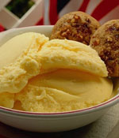
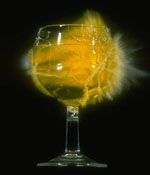

Balanced Diet for the Diabetic Patients
Here is a model balanced diet for the Diabetic Patients :A cup of Sugar-free coffee/ tea with 2-3 sugar-free biscuits can be consumed at the break of the day. For breakfast you can take up 2-3 chapathis now but with grain crops. By 11.00 AM you should have a salad or a glass of fresh lime juice. The lunch cannot be heavy and must be finished within 2.00 PM. For lunch a maximum of 200g of rice can be consumed with same or even more amount of vegetables. The tubers must be avoided and leafy and fibrous vegetables must be made more used in the diet. Soybeans is a very good choice. The properly boiled chicken causes no harm but shouldn't be taken inside in huge amounts. It's also obvious that more than meat, fishes can do better in the situation. The use of chicken is restricted to twice per week. By 4 O' clock, again a cup of Sugar-free tea/coffee with some Sugar-free biscuits(You can also experiment with brown breads) can be taken in. For supper the rice must be avoided. 2-3 Chapathis or wheat Dosas can do the job for you. A glass of milk also can be used before going to bed for non serious patients.
Fruits
- The fruits that can be used by the patients are - Apples, Papayas, Water Melon, Guava etc.
- The fruits that must be avoided by the patients are – Mangoes, Jack fruits etc.
- The fruits are more good when they are consumed directly than by their juices since it will provide more fibres to the digestive system of the human body.
Low Calory Sweeteners (LCS)
These artificial sweeteners tastes sweet but don't add much to the amount of sugar in the blood. Hence diabetic patients can consume LCS sweeteners to an extent.
Use of Alcohol
The effect produced by the consumption of alcohol and that produced when the glucose count goes down cannot be differentiated. So there are more chances for misinterpretation in the diagonisis of the disease. Also the after effects caused by the reaction due to the use of alcohol and medicines will create more and more complications. So it's obvious to stop the habit of drinking during the course for Diabetes Mellitus.
Dr. S. SivasankaranSri Chithira Thirunal Institute, Trivandrum